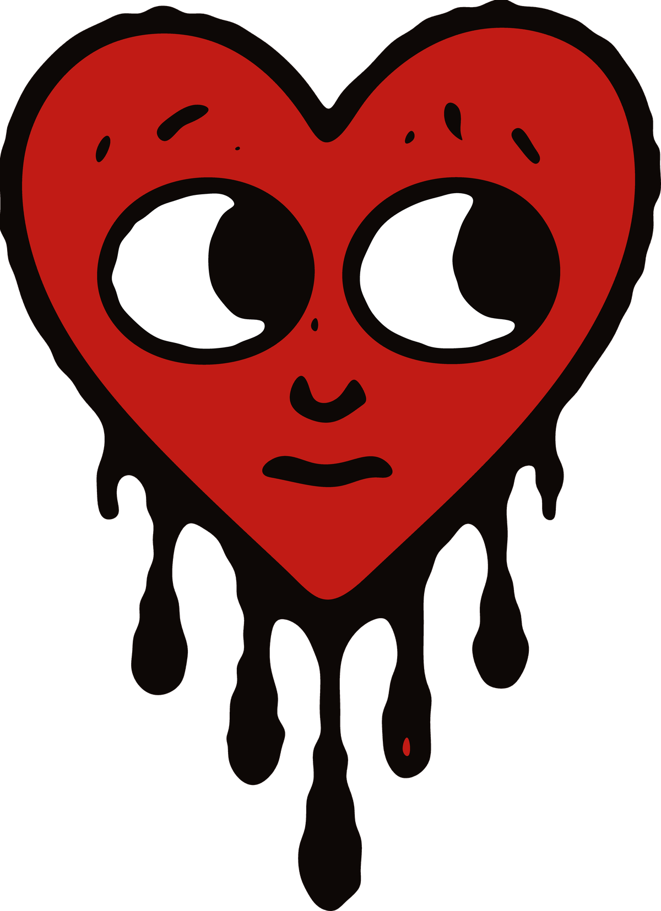
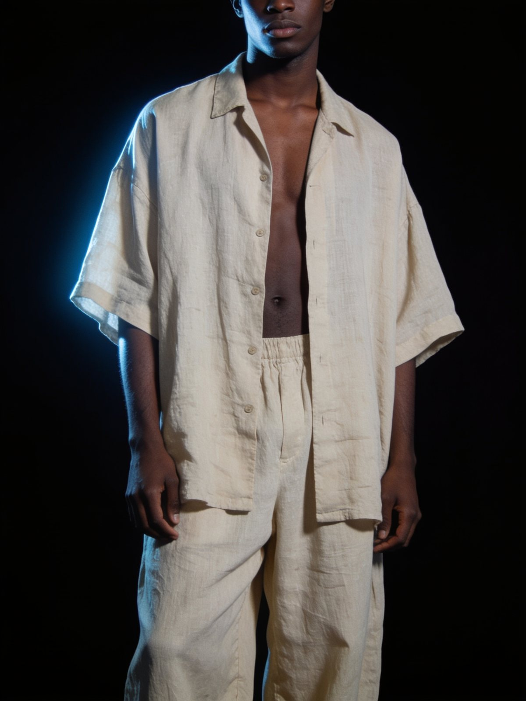
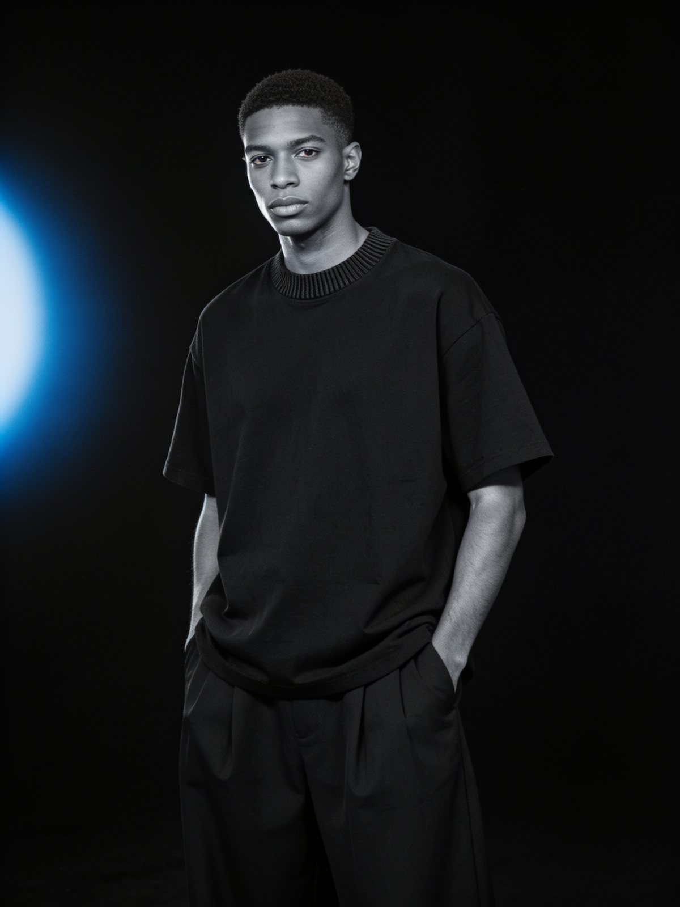
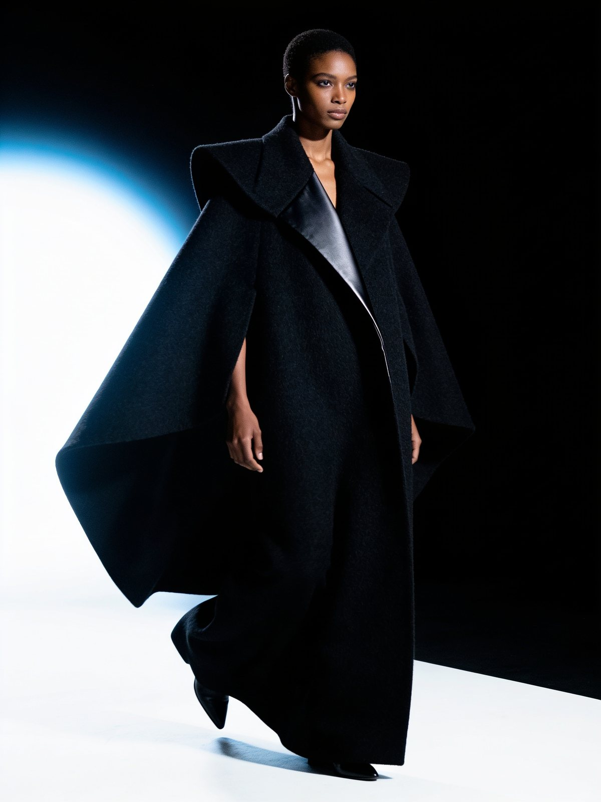
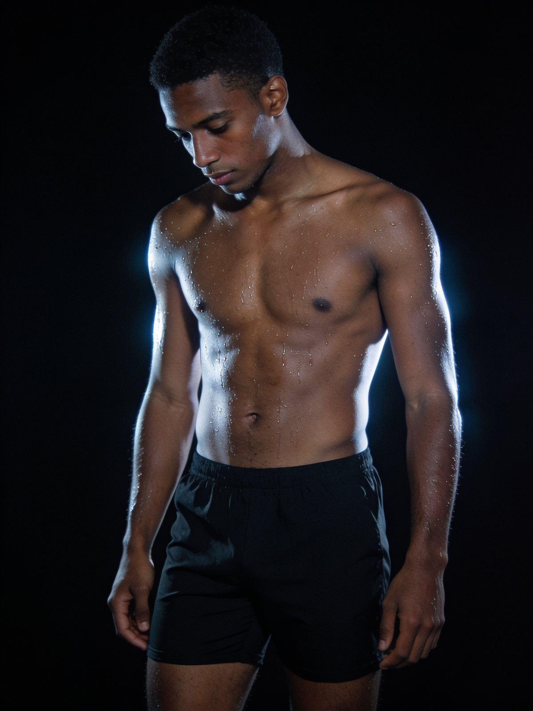
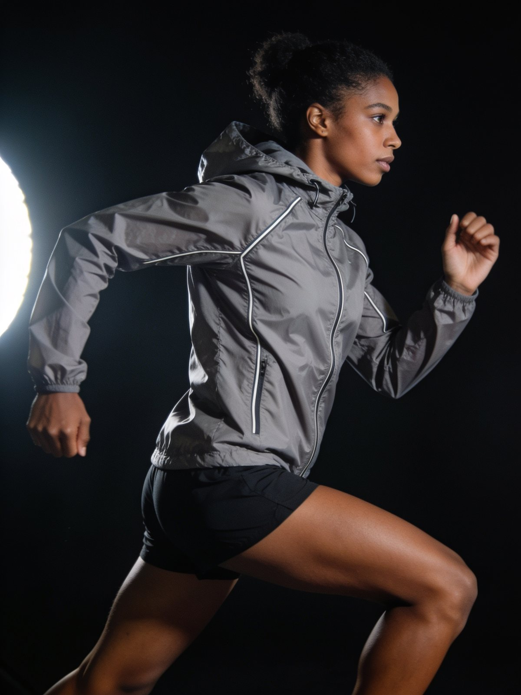
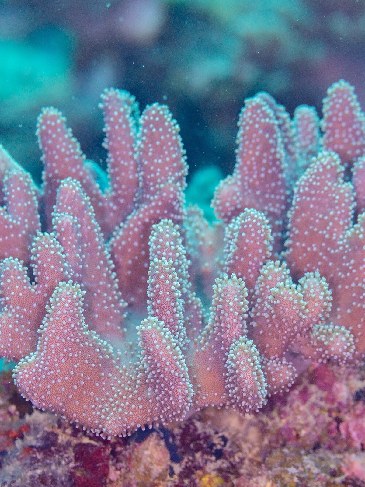

For media partners, investors and co-founders · 2026
VisNaturae
Outside, a fashion brand. Inside, a conservation engine.
A high-end fashion brand, built to be the coolest thing in the room first. The engine people discover second: 10% of every sale, not profit, goes to the foundations protecting the ocean, the forests and the land. Automatically.

NextWhy am I showing you this?
02 The invitation
Not my plan.our idea
I bring the production. I'm looking for the people who complete it: media first, then investors and anyone who wants to co-found.
Media, above all
The story, the content and the reach, yours to lead. It is what the brand needs most, and what I am mainly looking for.
Investment
Capital that helps the media and the first drop happen sooner and better. I am open to it.
Co-founding
A seat at the table, with as much creative input as I have. Open to anyone who wants to build this. Everything in this pitch is a starting point.
The name
Vis Naturae is the working name. The real one gets brainstormed in the room, by all of us.
The group
It has to be wide. A small circle can't reach everyone, and the brand is the community, so the community has to be in it. How do we keep it wide without diluting everyone down to nothing?
NextSo what is the brand?
03 The brand
Style first.Never the other way round
Judged the way Aimé Leon Dore, Nude Project or House of Errors are judged: by the clothes, the world and the people. The conservation is what you find once you're in.
High-end first
Heavyweight fabrics, clean silhouettes, quiet branding. A piece you'd buy with no mission attached.
Mission built in, not shouted
The 10% ships with every product, every time. It lives on the care label and the inside of the collar, not on the billboard.
A world, not a founder
No face at the front. A mood, a place-feeling, a type of person. It starts in one place and is built to open in the next; no single market owns it.
Raw, a little rebellious
A dripping heart, not a green leaf. Honest and emotional, for a generation that can smell a pitch.
The drip heart: love that bleeds into action.
Where mission and lifestyle collideConservation is seen as cute
Nice, harmless, not important. Nothing to do with status.
We are status-driven animals
People move toward whatever signals status, and today that is money and profit.
So we flip the association
Put nature, art and the unconventional at the highest end of fashion, and caring about them becomes the high-status thing to do.
One test for everything public
Would it still be cool if the mission didn't exist? If not, it doesn't go out. The homepage, the bio, the first ten seconds of any video: clothes and world, never the cause.
NextWhat makes it more than clothes?
04 More than clothes
A movementyou can wear
When you buy, you're not just supporting us. You're part of us.
The episodes
A series and a podcast that travel the world to show the people preserving it. It starts with the foundations we fund, so the community sees exactly where its 10% goes.
The art
We showcase art, sponsor artists, and put their work on our pieces and our platforms.
The culture
Collaborations with events and DJ sets. One idea is La Isla Social Club; nothing is agreed yet. The brand lives where its people live.
The people
A young team from every race and culture. That is how we get into a place for real, and how a real community gets built.
The membership
A subscription with perks: member pricing, first access, a seat at the events. More on it further down.
It travels
Episode by episode, the series and the podcast go around the world and show what people are doing to preserve it, wherever that work is happening.
Preserving, not saving
Change is inevitable, and we are not trying to freeze the planet in place. The line we draw is between preserving and growing on one side, and consuming and extracting on the other.
The people, not the problem
Each episode follows the people doing the work: who they are, what they are protecting, why it matters.
NextSo what do we actually sell?
05 One product first
One productat a time
Slow is smooth, smooth is fast, as they say in the military. We specialise in one product before anything else, and branch out from there.
01
Pick one
One product, chosen together. A linen shirt, men's or women's. A women's office shirt. Swimwear. Which one is open.
02
Get it right
All our attention goes into that one piece until it holds its own next to the best premium brands.
03
Then branch out
Once we are known for one thing, we add the next product. One at a time, never five at once.
It keeps the start small
One product means one small first drop, so the investment from us stays close to nothing.
It keeps the bar high
A high fashion brand can't afford an average piece. One product is how we make sure the first one isn't.
NextWhere could one product lead?
06 The line
Five lines,as one example
An example of where we might end up by focusing on one product at a time. What we actually make is for us to decide together.





Material
Heavyweight cotton and linen, muted earth palette, hits of red.
Cadence
Drops, not seasons. Small runs, no markdowns.
Price band
[€XX – €XXX] per piece
IllustrativeNextWhat could it look like?
07 Look 01 · Light
Light andopen
What it does for the product
- The app is shown on a real phone and watch, floating in a soft sky. You see the product before you read a word.
- Colour appears only inside the product's own screens, so that is where the eye goes.
What it does for the brand
- Calm, bright and friendly. Health feels like a pleasure, not a chore.
- Large, tight headlines and a lot of white space signal confidence without shouting.
What it would mean for us
- A light, welcoming brand, where the 10% could be shown as simply as a health score.
- It is the friendliest of the three, and the least high fashion.
The page shown is bevel.health, not ours. One of four directions the brand could take; the choice is ours to make together.
NextOr?
08 Look 02 · Black stage
One piece.One stage.
What it does for the product
- One product alone on black, lit like a museum piece. Everything else is taken away.
- Each detail gets a tile of its own: one feature, one number, one image.
What it does for the brand
- Authority and status. The page feels like an exhibition, not a shop.
- One blue button is the only colour on the page, so buying is the only action.
What it would mean for us
- One piece per page, treated as an object of desire. It carries the argument that caring about nature can be the highest status.
- It gives up warmth, so the community would have to come through the media.
The page shown is apple.com, not ours. One of four directions the brand could take; the choice is ours to make together.
NextOr?
09 Look 03 · Product first
The productis the page
What it does for the product
- The product fills the screen, edge to edge. The page is the product.
- Almost no words: a name, a number, one line, one button.
What it does for the brand
- Confident and a little strange. Dot-matrix type and small labels make it recognisable at a glance.
- It feels like culture and design, not a store.
What it would mean for us
- Built for drops: every piece named and numbered, the photograph doing all the work.
- It leaves little room for the mission, which would need pages of its own.
The page shown is nothing.tech, not ours. One of four directions the brand could take; the choice is ours to make together.
NextOr?
10 Look 04 · What we have today
The onewe already have
What it does for the product
- The pieces orbit the heart in front of a black hole. You enter a world before you see a product.
- Each line is a card you turn towards you, so browsing feels like exploring, not shopping.
What it does for the brand
- Raw and emotional: a dripping heart, not a green leaf.
- It is unlike any other fashion site, which makes it memorable and makes it ours.
What it would mean for us
- It exists. The site, the store and the bag are built and live, so this direction costs us nothing more to start.
- It is the most personal of the four and the furthest from classic high fashion. The question is how much of it we keep.
The page shown is forceofnature.org.in as it stands today. The fourth of four directions; the choice is ours to make together.
NextWill people buy it?
11 Market opportunity
Yes. Conscious buyingis the default now
$371B
global streetwear market in 2025. Other research firms put it between $185B and $360B
22.9%
forecast yearly growth of sustainable fashion, 2023 to 2030
2 in 3
Gen Zs and millennials say they will pay more for sustainable products
Sources: Fortune Business Insights · Coherent Market Insights · Deloitte 2024 survey, 44 countries.
Why now
Proof is now cheap
Payments, partner data and reporting can be published in near real time. Proof used to be expensive; now it's a design choice.
Creators want a cause
Creators build around meaning. A brand with a real mechanism gives them something honest to stand next to.
Community hunger
People are tired of feeds. They want to belong to something small, physical and true.
2023 and 2030 are the published figures. The years between follow the forecast's 22.9% yearly growth.
NextHow does it make money?
12 Business model
Three ways,online first
The 10% is a cost line planned in from day one, not a donation deducted from whatever is left. A membership adds recurring revenue on top.
Direct e-commerce
Core channel. Full price, full margin, first-party data. The store is already built.
Target mix: [XX]%
Limited drops
Small dated runs with community-first access. Scarcity that's real because the runs are small, not manufactured.
Target mix: [XX]%
Wholesale & collabs
Later on: a few selected stockists and partner capsules. Reach and credibility, not volume.
Target mix: [XX]%
| Retail price | Cost of goods | Mission (10%) | Marketing & fulfilment | Contribution margin |
|---|---|---|---|---|
| €[XX] | €[XX] | €[X.X] | €[XX] | [XX]% |
NextWhat keeps people coming back?
13 Membership
A membershipto the inside line
A paid tier above the free newsletter. Recurring revenue for the brand, real advantages for the people closest to it.
Member pricing
Discounts on every drop and on the core line, all year. The more you wear it, the less it costs you to keep wearing it.
Member discount: [XX]%
The fast lane
Members go to the front of every waitlist and get first access to limited runs, before a drop opens to anyone else.
Head start: [XX] hours
The community
A private space for the people who wear it like they mean it, and a seat at the rituals: dives, plantings, clean-ups, member-only events.
Online and in person
Membership
€[XX]/ month
or €[XXX] a year. Cancel any time.
Illustrative · price to be setRecurring revenue
Predictable monthly income between drops, target [XX]% of revenue by year two.
Demand before production
The member waitlist tells us how many to make, so small runs stay small on purpose, not by guesswork.
The 10% applies here too
A tenth of every membership fee goes to the same reef, forest and coastline work as every sale.
NextHow do we find the first ones?
14 Documenting the process
We filmthe build
Our main short-form content is the process itself. Nothing staged: the company being built, shown as it happens.
- 01
Each of us films our part
Each founder shows exactly what they're responsible for, in their own voice.
- 02
The partners we meet
The foundations, the factories, the artists. The meetings, as they happen.
- 03
The clothes we design
Sketch, fabric, sample, fitting. The piece takes shape in public.
- 04
Everyone follows the story
Short clips posted as we go, so people watch it being built week by week.
- 05
The product in their hands
The story ends with the piece they watched being made, delivered to them.
NextHow does that turn into growth?
15 Growth
Built to sell out,on purpose
One product at a time, and never everything in stock at once. Small batches, a waitlist that means something, and three kinds of story told until the tribe grows on its own.
Behind the build
Sourcing, sampling, the decisions inside every piece. The process, not just the finished piece.
Why it exists
What it's made from, why it's cut that way, what it's for. The product argues its own case.
The founders' line
The people building this, documented as it happens, not written up after the fact.
Small batches, on purpose
Every piece runs in limited quantities, sized to who's already waiting for it, not to a factory minimum. When a run sells out, the next one is what people are waiting for.
Email & SMS waitlist
First access to every limited run, and the only way to know before it's live: a standing invitation, not a discount trap.
Styling & design input
The community votes on colourways, styles the pieces their own way, and helps shape what the next product looks like.
Giveaways & contests
A way to say thank you and pull people in deeper, not a follower-count trick.
Direct Q&As
Open questions about the brand, the mission, what's next, answered directly, not through a press release.
NextWhen do we pay for reach?
16 Paid strategy
Earned first,then paid for
01
Post
Every drop teaser and story goes out organically first, with no spend behind it.
02
Prove
Whatever performs on its own, saves, shares, click-throughs, becomes the ad creative. Nothing else does.
03
Scale
Spend concentrates on the best-performing creative only, tracked by return on ad spend, not by guesswork.
Return on ad spend
Target [X]x+ before a creative gets more budget. Below that, the creative gets cut, not the spend increased.
Cost per acquired customer
Tracked per creative and per channel, so we know exactly what's working and what's just noise.
Organic-to-paid conversion
Only creatives that already prove themselves for free get paid reach behind them.
NextSo what's the engine inside?
17 The problem
Nobody can showwhere the money went
Every brand talks about impact. Almost none can show you where a single dollar went.
53%
of green claims in the EU give vague, misleading or unfounded information. 40% have no supporting evidence at all.
Source: European Commission.
Impact you can't see
Pledges, opt-ins and round-ups nobody tracks. The giving is optional, invisible and easy to quietly drop.
Sustainability as a campaign
A capsule, a hashtag, a percentage of profit that never materialises, because early-stage brands rarely have profit.
A generation that wants proof
Younger buyers want the impact built into the product itself, without guilt, extra steps or a lecture.
NextSo what do we do differently?
18 The idea
Of every sale, not profit.Automatically.
No pledges. No opt-ins. No round-ups. The impact happens the moment you wear it.
Ten percent of the price of every piece is set aside the moment it's bought and sent to the foundations doing the work on the ground. Not charity in general: the people protecting the ocean, the forests and the land.

Coral restoration and marine protection.
Native reforestation and habitat protection.
Beach and mangrove clean-ups, erosion and plastic recovery.
Photos: Diego Delso (CC BY-SA 4.0), Rod Waddington (CC BY-SA 2.0), dronepicr (CC BY 2.0). Via Wikimedia Commons, cropped.
NextHow does the money actually get there?
19 The mechanism
From a checkoutto a coastline
Transparency is the product feature. If we can't show it, we don't claim it.
- 01
A piece is bought
10% of the sale price is ring-fenced at checkout. Before costs, before margin.
- 02
Held separately
Mission funds sit in a dedicated account. Never working capital, never payroll.
- 03
Pooled each quarter
Funds are batched and allocated across reef, forest and coastline projects.
- 04
Deployed to partners
Vetted conservation partners receive it as flexible, recurring funding.
- 05
Published openly
Every quarter: raised, deployed, outcomes. And the method itself, so any brand can copy it.
NextWhat does that add up to?
20 Impact
What 10%turns into
[X,XXX]
Trees planted
[XX] ha
Of reef restored
[XXX] km
Of coastline cleaned
$[XXX]K
Deployed to partners
Assumes [X] units / month at €[XX] average order value.
NextIs that all?
21 Beyond the numbers
No. The real impactcan't be counted
Trees planted and reef restored are the part we can count. They are the floor, not the point. Picture this instead.
Create out of love, and others will feel it too.
- 01
A kid sees it
A twelve-year-old sees the heart on someone they look up to: a DJ, a surfer, an older cousin.
- 02
They look closer
They follow us, and watch an episode about people restoring a reef, across the world or ten minutes from their house.
- 03
A belief shifts
Nature stops being scenery. Protecting it becomes what the people they admire do.
- 04
They act
They show up to a clean-up, bring two friends, and start asking their parents different questions.
- 05
It compounds
Ten years on, that kid is an artist, a diver, a founder, or the one in the boardroom deciding what gets protected.
We're close to the work
We work with the foundations directly and invest in them, so the stories we tell are real ones, from people we know.
Our money buys attention
For conservation, and for art. Attention is what shifts beliefs, and beliefs are what change behaviour.
The wearer changes too
People ask about the heart. Every time someone explains it, they mean it a little more.
Customers raise the bar
Once people have bought from a brand that gives automatically, they start asking why the others don't.
The model is the proof
If a brand can give 10% of every sale and still grow, the excuse is gone. Giving at the checkout stops being a risk and becomes a benchmark.
Talent follows
Artists, athletes and makers choose to work with a brand like this, and they bring their own audiences.
Other companies follow
We publish exactly how the 10% works. Every company that copies it funds work we will never touch. We want to be copied.
NextDoesn't giving away 10% hurt us?
22 The 10% pays for itself
No. The 10%pays for itself
It does not eat into our margin. It does the work a marketing budget would, and it hands us the stories to tell.
It is priced in
The 10% sits inside the price of every piece from day one, like the fabric. It is a cost we plan for, not money taken out of what is left.
It is our marketing
Other brands pay to be noticed. The 10% is the reason people talk about us, share us and come back, so it does the job that ad money would.
It is our content
Every foundation we fund is a story we can film. The 10% fills the content calendar without us having to invent anything.
An episode per place
Who they are, what they are protecting, why it matters. One place, one episode, and a run of short clips cut from it, starting with our partners.
Days in the field
The clean-up, the planting, the dive. We go, we film, and the community comes with us.
The numbers as posts
Each quarter's report, what came in and where it went, becomes content in its own right.
NextWhat does all this cost us?
23 What it costs us
Close to nothingto start
Because of how the company works, the only real investment from us is the media and the first drop.
01
Media first
We build the story and the tribe before there is anything to sell. That costs time and talent, and both are already in this room.
02
One limited drop
A small first run, sized to the people already waiting. Or pre-orders: the tribe pays first, and we produce exactly what was ordered.
03
Online only
No shops yet, no rent, no stock sitting on shelves. Online is the fastest way we scale.
Limited drops build traction
Small runs sell out, the waitlist grows, and each drop funds the next one.
Pre-orders remove the risk
If we would rather not fund the first run ourselves, the money comes in before production starts.
Get the media right
Once it is rolling and the media is done properly, the rest takes care of itself.
NextWhat exists already?
24 Traction
The brand, the siteand the store
Brand identity
Name, drip-heart mark, voice and tagline.
Brand site live at forceofnature.org.in
Mission story, newsletter capture and follow-the-build updates.
Online store designed and built
Built around five example lines, with bag and checkout flow, ready for whatever we choose to make.
Product direction and visuals
Five example lines cast and shot, to picture where one product at a time could lead.
Audience infrastructure
Email list on Kit, content pipeline, [XXX] early subscribers.
IllustrativeDomain owned outright
forceofnature.org.in, registered and held directly, not licensed or borrowed.
Trademark filing underway
Application in progress to protect the name and the mark.
Manufacturing conversations opened
Early introductions underway to factories in Madagascar and Mauritius, through connected local industry contacts.

NextWho is already helping?
25 Already behind us
The peoplealready behind us
I didn't get this far alone. A group of advisors helped me to this point, and they are willing to keep helping us.
Boardroom connections
Connections in some of the biggest companies in Mauritius, several of them in textile.
People in textile
People who work in textile every day, one phone call away when we need a straight answer.
Factories I've visited
I've been inside the factories and seen how they run, so production starts from first-hand knowledge, not a search engine.
Advisors, already in
A good group of advisors who helped get the brand this far, and who are willing to help us take it further.
We ask before we spend
Fabric, cost and quality questions go to people who do this for a living, before a single sample is paid for.
Production is a conversation, not a cold call
The factory introductions are already under way, through people who know us.
NextWho else do we bring in?
26 Partnerships
Foundations, stockistsand creators
Conservation partners
[Partner A] · [Partner B]- Verified reef, forest and coastline projects
- Simple outcome reporting
- Willingness to be visible to our community
- Funding every quarter, so they can hire and plan years ahead
- Visibility that brings them volunteers and other donors
- A named place in every impact report
Retail & brand partners
[Stockist A] · [Brand B]- Later on: three to five stockists aligned on premium and purpose
- Partner capsules and co-branded drops
- Pop-up spaces in key cities
- A story that sells itself on the floor
- Limited exclusives for their customers
- Shared impact credit
Creators & community
[Ambassador A] · [Ambassador B]- People already doing the work: divers, surfers, foresters, athletes
- Long-term ambassadors, not one-off posts
- Early product and first access
- A platform and a share of the voice
- A seat at the rituals: dives, plantings, clean-ups
NextWhen does it happen?
27 Roadmap
From pre-launchto scale
- NowQ[X] 2026
Foundation
- Brand, site and store built
- Samples and supplier selection
- Partner conversations opened
- 02Q[X] 2026
Pre-launch
- Media and the tribe built first
- Founding-member pre-order
- Partner MoUs signed
- Creator seeding
- 03Q[X] 2026
Launch
- First drop: one product
- Launch event
- First impact report published
- 042027
Scale
- Regular drops, branching out product by product
- Wholesale and partner capsules
- Second market opened, with its own foundation partner
- First hires: design, social and operations support
Verified suppliers only
Trade-assured, verified manufacturers, checked against past work before a single sample is ordered.
A simple spec, not a novel
One clear tech pack per piece: mockup, size chart, the details that matter. Less room for a factory to get it wrong.
A relationship, not a transaction
Regular contact with the people making the product, treated as a partner, not a vendor.
NextWhat could go wrong?
28 Risks
Six things,said out loud
Better said now, in the room, than discovered six months in.
Founders get discouraged
The early months are slow. No sales yet, other work pulling at us, and the energy of the first meeting fades. People quietly drift.
Risk 01 · the biggest one
Attention gets split
Some of us already run other businesses. This one becomes the thing we get to when everything else is done.
Risk 02
The product misses the bar
We call ourselves high fashion and the first piece is only good. The whole claim falls with it.
Risk 03
The media doesn't land
Everything here depends on building the tribe first. If the content is ignored, there is no waitlist and no drop.
Risk 04
The 10% loses trust
If we can't show exactly where the money went, we become the problem this pitch describes.
Risk 05
Too wide, too early
Too many people in the room, nobody owning anything, every decision made by committee.
Risk 06
NextWhat do we do about them?
29 Mitigation
One answerfor each
One answer for each risk, in the same order as the slide before.
Small wins, every week
Media first means there is always something to show. We set one goal for the first 60 to 90 days, expect it to be slow, and say it out loud when someone is running low.
Answers risk 01
Seats that match real time
Founder seat or partner seat, chosen honestly. Shares are earned over time, and every founder owns an area that is theirs to run.
Answers risk 02
One product, no shortcuts
We specialise in one piece, lean on advisors who work in textile, and release nothing until the sample holds up.
Answers risk 03
Test before we spend
Everything goes out for free first, and only what works gets pushed. Pre-orders show the demand before we produce.
Answers risk 04
Proof built in
The 10% is set aside at checkout, held in its own account, and published every quarter.
Answers risk 05
A small core, a wide circle
A few founders carry it and decide. Partners, artists and members surround it. Everyone picks their own seat.
Answers risk 06
NextSo who does what?
30 What I bring
What I bringto the table
People see conservation as cute. I want caring about nature to be the highest status there is.
- 01
A financial education
Studied finance in the Netherlands. I can build the numbers, read them, and keep the 10% honest.
- 02
Experience abroad
Years living and working in Europe, and time in the military. I know how a brand has to read beyond its first market.
- 03
Fashion from the inside
Worked at Mr Marvis in Amsterdam, a sustainable B Corp start-up, inside the high end of fashion culture.
- 04
The boardrooms
At home in Mauritius I know people in the boardrooms of the biggest companies, and the people just below them.
- 05
Production
The connections to make it. Factory conversations are already open, through people I know in the industry.
NextWho else is in?
31 The founders
One seat taken,the rest open
Léo Espitalier Noël
Founder · productionStudied finance in the Netherlands, reset in the military, then worked in fashion at Mr Marvis, a sustainable B Corp start-up, while living in Amsterdam. Grew up in Mauritius, and has the connections there to get it made.
One seat at the table, with one voice. The same as every other founder.
Investors · Capital
Funding for the media and the first drop.
Open · terms to be agreedMedia · the seat I most want filled
Story, content, campaigns, the episodes.
Founder or partner seats · openThe founders · Brand identity
The name, the look and the voice, decided in the room.
Equal sayThe wider group · Art, events, community
Artists, event partners and the young team around the brand.
Seats open[Name] · Conservation Advisor
Partner vetting and impact measurement.
Advisor · to be confirmedNextWho owns it?
32 Ownership
Equal shares,equal attention
I'm open to splitting the business equally among the founders, and to investors alongside us. Equal shares mean equal attention. The terms are ours to agree in the room.
The founder seat
All in- This gets your full attention, alongside the rest of us
- You own an area and make the calls in it
- An equal share with every other founder
- Shares granted over four years, so what you hold matches what you put in
- An equal say in the brand identity and the direction
The partner seat
Part of your time- The part of your time you can truly give, for those with other businesses to run
- A clear contribution: a skill, a network, a platform
- Profit units: a share of the profits, without shares or votes
- A voice in the room and a place in the story
The investor seat
Capital- Capital for the media and the first drop
- Acceptance that the 10% leaves every sale first, before anything else
- A stake in the company, on terms we agree
- The same quarterly report the public sees: raised, deployed, outcomes
You choose your seat
Nobody is assigned one. Each of us says honestly what we can give, and takes the seat that matches it.
Wide, without diluting
A small group of founders carries it. A wide circle of partners, artists and members surrounds it. Everyone is in, and nobody's share is thinned to nothing.
NextWhat keeps that fair?
33 Terms of ownership
The same rulesfor everyone
A starting proposal, so that equal ownership also means equal accountability. Every term here is ours to change.
Granted over four years
Ownership is granted over time: four years, with a one-year cliff. Leave before a year and you get nothing. After that, your share builds month by month.
Good leaver
Illness, or leaving on agreed terms. You keep what has vested.
Bad leaver
Walking away, no longer contributing, or breaking the agreement. You sell your shares back at a low price.
It applies to me too
The same clock and the same clauses for every founder, me included.
A contribution-based split
Instead of fixing percentages on day one, everyone earns points for what they put in: time, cash, contacts, content, production. The split follows the points, so whoever does the work owns more. Slicing Pie is the best-known model. It suits us, since nobody knows yet who will really show up.
Profit units, not shares
Units that pay a share of the profits, and a share of the value if the company is ever sold.
Partnership, not ownership
No actual shares and no votes. The circle stays wide without legal ownership spread across twenty people.
Live while you are active
The units stay live while you contribute. Stop contributing and they lapse.
Open, with one fixed point
The amount, the valuation and the form of the investment are all open. One thing is not: 10% of every sale goes to the foundations first, and no investment changes that.
One area each, and named hours
Each founder owns an area, has the final call in it, and says out loud the hours they can give.
A monthly check-in
What each of us did, what comes next. Short, honest, written down.
Put in writing
All of it goes into a shareholders' agreement, drawn up by a lawyer, before any shares are issued.
NextSo what am I asking of you?
34 The ask
Media first.money welcome
With media first and one limited drop, the brand can start on very little. Investment gets it there sooner.
- 01Take a seat: founder, partner or investor
- 02Bring your eye and your voice to the brand identity
- 03Agree the terms with me
- 04Build the media and the first drop together
- 05Put the brand first
NextWhat holds us together when it gets hard?
35 The brand comes first
The brandcomes first
If you're in on this, it is the one thing I ask of every one of us, myself included.
We remember why we're here
We are here to have a positive impact. That comes before anything any one of us wants from it.
We put personal needs aside
When what one of us needs pulls against what the brand needs, the brand wins.
Because the brand outlasts us
The brand's impact is long-term. Our personal needs are subjective, and they change with circumstance.
NextSo?
Let's build ittogether
Where mission and lifestyle collide.
Vis Naturae Operations · 2026